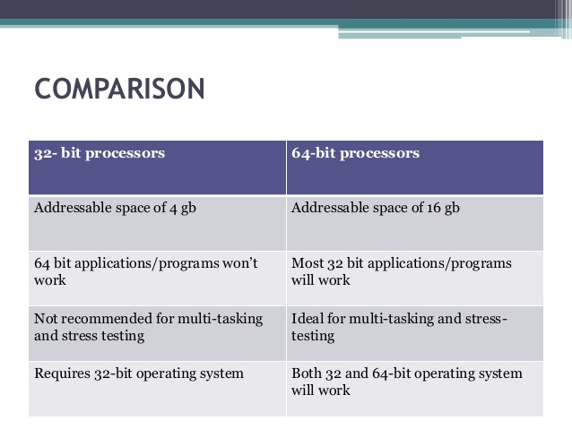

We’ll write our own 64-bit x86 operating system kernel from scratch, which will be multiboot2-compliant.
In the first video, we write our initial boot code and also include a multiboot2 header so that it can be understood by bootloaders.
This operating system will be primarily written in C, but we’ll need some assembly as well for any of the hardware-specific code.
In here, I have setup a basic stack, enable long mode, setup basic paging, and write some C code that prints any text onto the screen.
Docker is an OS-level virtualization software platform that helps users in building and managing applications in the Docker environment with all its library dependencies.
Note: A 64-bit processor and 4GB system RAM are the hardware prerequisites required to successfully run Docker on Windows 10.
Note: Suppose the installer (Docker Desktop Installer.exe) is not downloaded; you can get it from Docker Hub and run it whenever required.
Once you start the installation process, always enable Hyper-V Windows Feature on the Configuration page.
Then, follow the installation process to allow the installer and wait till the process is done.
After completion of the installation process, click Close and restart.
After the installation process is complete, the tool does not start automatically. To start the Docker tool, search for the tool, and select Docker Desktop in your desktop search results.
Before starting the application, Docker offers an onboarding tutorial. The tutorial explains how to build a Docker image and run a container.
You are now successfully running Docker Desktop on Windows.
Next, follow the instruction below to install the Docker engine on your system.
Go to Docker CLI and run the Docker version to verify the version of Docker installation on the system.
After installing docker ,now run the following commands:
docker build buildenv -t myos-buildenv
Windows (CMD): docker run --rm -it -v "%cd%":/root/env myos-buildenv
make build-x86_64
To leave the build environment, enter exit.
to display text ,we have to install qemu from following link:
https://qemu.weilnetz.de/w64/
